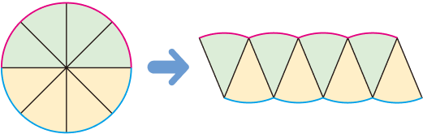
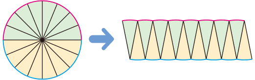
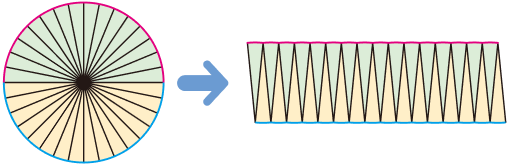
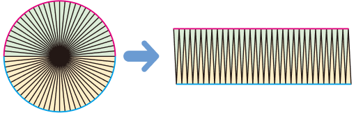
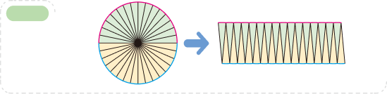
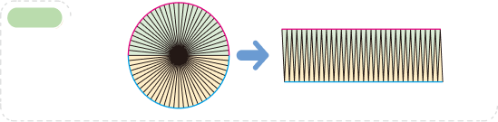

원의 넓이를 어떻게 구할 수 있을지 알아봅시다.
원을 다음과 같이 잘라서 이어 붙여 보세요.
8 등분

16 등분

원을 32등분, 64등분으로 잘라서 이어 붙인 모양은 어떤 도형에 가까워지나요?
32 등분

64 등분

원을 한없이 잘라서 이어 붙이면 어떤 도형이 될까요?
8등분
16등분
32등분

64등분

원의 넓이를 구할 때 어떤 도형의 넓이를 이용하면 될지 이야기해 보세요.
직사각형의 넓이를 이용하면 될 것 같습니다.
입력타입토글
리셋
확인
제출